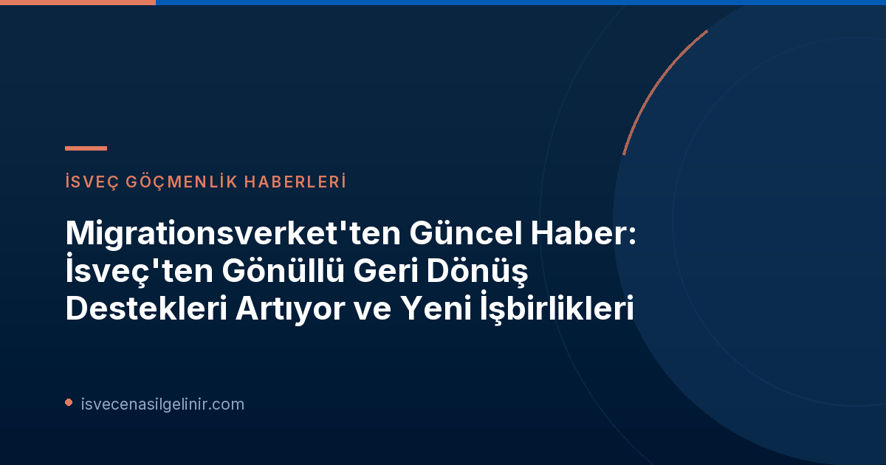

İsveç'ten Gönüllü Geri Dönüş Başvurularında Rekor Artış
Migrationsverket'in hükümete sunduğu son rapora göre, gönüllü geri dönüş programlarına olan ilgi 2026 yılında önemli ölçüde arttı. Bu artış, ajansın bilgilendirme çabalarının bir sonucu olarak değerlendirilmekle birlikte, mevzuat değişiklikleri ve hibe seviyelerindeki düzenlemelerin de etkili olduğu belirtiliyor.| Dönem | Gönüllü Geri Dönüş Hibesi Başvurusu | Onaylanan Başvuru Sayısı |
|---|---|---|
| Ocak-Ağustos 2026 | 763 | 200 |
| Tüm Yıl 2025 | 133 | 1 |
Ekonomik Destekten Fazlası: Kapsamlı Bilgi ve Danışmanlığın Önemi
Migrationsverket'ten birim müdürü Petra Lindh'in vurguladığı gibi, gönüllü geri dönüş düşünen bireyler için yalnızca ekonomik destek sağlamak yeterli değildir. Lindh, "Ekonomik bir hibe, koşulların bir parçasıdır, ancak kendi başına yeterli değildir. Gönüllü geri dönüşü düşünen herkesin, ayrılış öncesinde ve sonrasında ortaya çıkan pratik konularda desteğe ihtiyacı var." ifadelerini kullandı. Bu yaklaşım, ajansın bireylere daha bütünsel bir destek sunma stratejisinin temelini oluşturuyor.Anahtar Destek Alanları
- Güvenilir ve Kapsamlı Bilgilendirme
- Nitelikli ve Bağımsız Danışmanlık
- Seyahat Öncesi ve Sonrası Pratik Destek
İsveç'e göçmenlik süreçleri, oturum izinleri ve İsveç Vatandaşlık Testi gibi konularda detaylı bilgi almak için ilgili kaynaklarımızı ziyaret edebilirsiniz.
Uluslararası İşbirlikleriyle Güçlenen Destek Mekanizması
Gönüllü geri dönüş programının başarısını artırmak amacıyla Migrationsverket, uluslararası kuruluşlarla işbirliklerini derinleştiriyor. Bu ortaklıklar, bireylere daha geniş kapsamlı ve erişilebilir destek sağlamayı hedefliyor.IOM ile Üçüncü Ülkelerde Ödeme Desteği
Migrationsverket, Uluslararası Göç Örgütü (IOM) ile uzun süredir devam eden işbirliğini genişletti. Ağustos ayından itibaren IOM, gönüllü geri dönüş hibelerinin Suriye, Irak, Etiyopya, Sudan, Güney Sudan ve Demokratik Kongo Cumhuriyeti gibi üçüncü ülkelerdeki ödemelerini ve bilgilendirme faaliyetlerini üstlenmeye başladı. Gelecekte bu işbirliğine ek ülkelerin de dahil edilmesi için görüşmeler devam ediyor.UNHCR'dan Bağımsız Danışmanlık Hizmetleri
Birleşmiş Milletler Mülteciler Yüksek Komiserliği (UNHCR) ile de yeni bir işbirliğine imza atan Migrationsverket, Ağustos ayından bu yana UNHCR aracılığıyla gönüllü geri dönüşü düşünen kişilere fiziksel ve dijital danışmanlık hizmeti sunuyor. Bu danışmanlık, başvuru ve geri dönüş süreci, ayrıca menşe ülkede yeniden yerleşme olanakları hakkında kapsamlı bilgiler içeriyor. Petra Lindh, UNHCR'ın danışmanlığının Migrationsverket'in bilgi ve inceleme sürecini tamamlayarak bireylere bilinçli ve sağlam bir karar verme konusunda daha iyi koşullar sağladığını belirtiyor.Uygulamadaki Zorluklar ve Migrationsverket'in Çözümleri
Rapor, programın uygulanmasında çeşitli zorluklarla karşılaşıldığını da gösteriyor. Geri dönüş hibesine başvurma potansiyeli olan kişilerin büyük bir kısmının Migrationsverket ile devam eden bir teması olmaması, hedef kitleye ulaşmayı zorlaştırdı. Bu durum, daha geniş bilgilendirme çabaları ve hedef kitleyle temas halinde olan diğer kurumlarla işbirliği ihtiyacını artırdı. Ayrıca, 2026 yılı Ağustos ayı itibarıyla karara bağlanan 590 başvurudan 317'sinin reddedilmesi, başvuru koşulları hakkında bilgi eksikliğini ortaya koydu. En yaygın ret nedeni, başvuru sahibinin gerekli oturum izni türüne sahip olmamasıydı. Bu durum üzerine Migrationsverket, bilgi materyallerini sürekli geliştirerek, yeni kurallar ve hibe miktarlarından ziyade, temel gereklilikler, sıkça yapılan yanlış anlamalar ve ret nedenleri üzerine daha net bilgilendirmeler sunmaya başladı.Raporun Önemli Çıkarımları ve Gelecek Adımlar
Migrationsverket raporunun genel değerlendirmesi, gönüllü geri dönüşün başarılı olması için sadece ekonomik teşviklerin yeterli olmadığını açıkça ortaya koyuyor. Güvenilir bilgi, nitelikli danışmanlık ve ayrılış öncesi/sonrası desteğin merkezi koşullar olduğu vurgulanıyor. Bu nedenle, kamu kurumları, uluslararası kuruluşlar ve diğer paydaşlarla işbirliğinin sürdürülmesi kritik önem taşıyor.| 2026 Ocak-Ağustos Dönemi Geri Dönüş Programı Özet Bilgileri | |
|---|---|
| Toplam Başvuru Sayısı | 763 |
| Karara Bağlanan Toplam Vaka | 590 |
| Onaylanan Başvuru Sayısı | 200 |
| Reddedilen Başvuru Sayısı | 317 |
| Diğer Kararlar | 73 |
| Suriyeli Başvuru Sahipleri | 454 |
| Toplam Görev Maliyeti (yaklaşık) | 25.5 milyon SEK |
| Bilgilendirme Maliyetleri (yaklaşık) | 9.1 milyon SEK |
| Geri Dönüş Hibesi Maliyetleri (yaklaşık) | 16.4 milyon SEK |
Sonuç
İsveç Göçmenlik Ajansı Migrationsverket'in gönüllü geri dönüş programlarındaki bu kapsamlı çalışmaları, insani göç yönetimi ve entegrasyon politikaları açısından önemli bir örnek teşkil etmektedir. Programın başarısı, sadece mali destekle değil, aynı zamanda bireylerin ihtiyaçlarına yönelik kişiselleştirilmiş bilgi, rehberlik ve pratik destekle mümkün olabileceğini göstermektedir. Bu yeni işbirlikleri ve geliştirilen stratejilerle, gönüllü geri dönüş süreçlerinin daha insancıl ve etkili bir şekilde yürütülmesi hedeflenmektedir.Referanslar
İsveç Göçmenlik Süreçleri Hakkında Daha Fazla Bilgi Edinin
İsveç'teki yaşam, çalışma ve vatandaşlık süreçleri hakkında kapsamlı rehberlerimize göz atarak güncel bilgilere ulaşın.